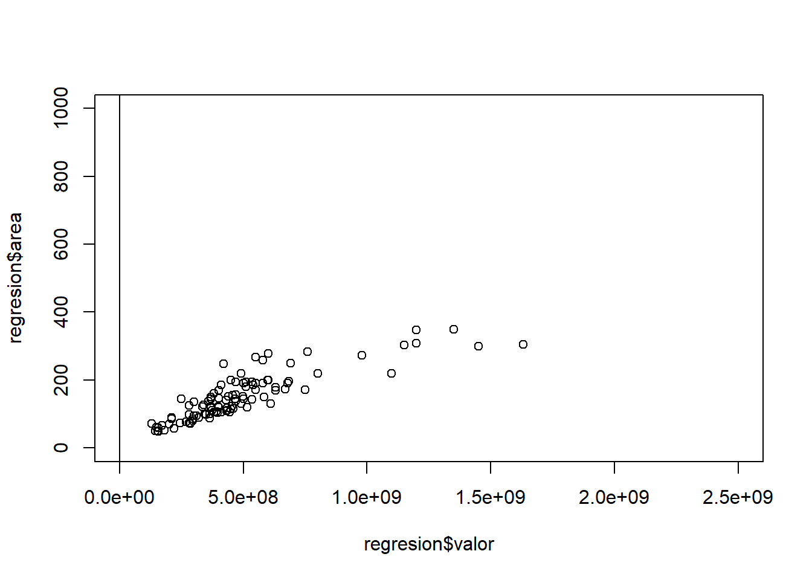

REGRESION
Regresion lineal simple
## valor area
## Min. :1.300e+08 Min. : 49.0
## 1st Qu.:3.350e+08 1st Qu.:100.0
## Median :4.350e+08 Median :138.0
## Mean :4.855e+08 Mean :150.5
## 3rd Qu.:5.500e+08 3rd Qu.:190.0
## Max. :1.630e+09 Max. :350.0
## valor area
## valor 1.0000000 0.8599923
## area 0.8599923 1.0000000##
## Call:
## lm(formula = valor ~ area, data = regresion)
##
## Residuals:
## Min 1Q Median 3Q Max
## -397309920 -69525715 11622185 63152268 618679323
##
## Coefficients:
## Estimate Std. Error t value Pr(>|t|)
## (Intercept) -26807060 33644921 -0.797 0.427
## area 3403698 202988 16.768 <2e-16 ***
## ---
## Signif. codes: 0 '***' 0.001 '**' 0.01 '*' 0.05 '.' 0.1 ' ' 1
##
## Residual standard error: 141600000 on 99 degrees of freedom
## Multiple R-squared: 0.7396, Adjusted R-squared: 0.737
## F-statistic: 281.2 on 1 and 99 DF, p-value: < 2.2e-16
## 1 2 3 4 5
## -23403362.8 422519.7 24248402.2 48074284.7 71900167.2
## 6 7 8 9 10
## 95726049.7 119551932.2 143377814.7 167203697.2 191029579.7
## 11 12 13 14 15
## 214855462.2 238681344.7 262507227.2 286333109.7 310158992.2
## 16 17 18 19 20
## 333984874.7 357810757.2 381636639.7 405462522.2 429288404.7
## 21 22 23 24 25
## 453114287.2 476940169.7 500766052.2 524591934.7 548417817.2
## 26 27 28 29 30
## 572243699.7 596069582.2 619895464.7 643721347.2 667547229.7
## 31 32 33 34 35
## 691373112.2 715198994.6 739024877.1 762850759.6 786676642.1
## 36 37 38 39 40
## 810502524.6 834328407.1 858154289.6 881980172.1 905806054.6
## 41 42 43 44 45
## 929631937.1 953457819.6 977283702.1 1001109584.6 1024935467.1
## 46 47 48 49 50
## 1048761349.6 1072587232.1 1096413114.6 1120238997.1 1144064879.6